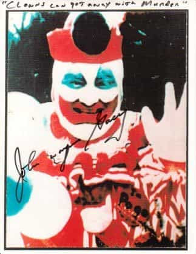
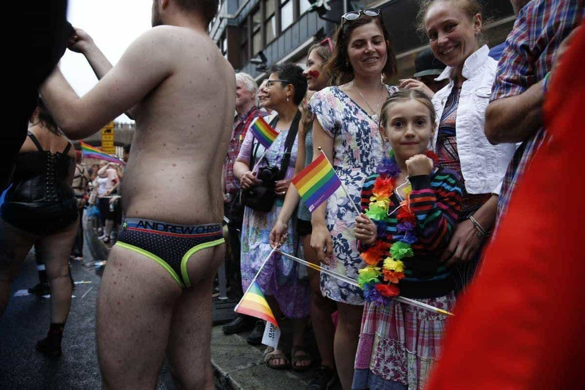
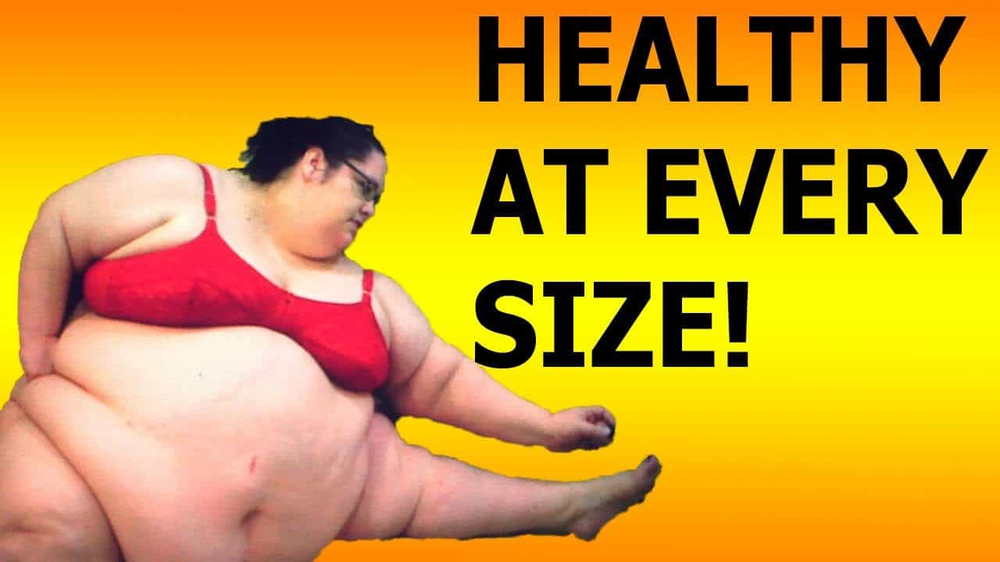
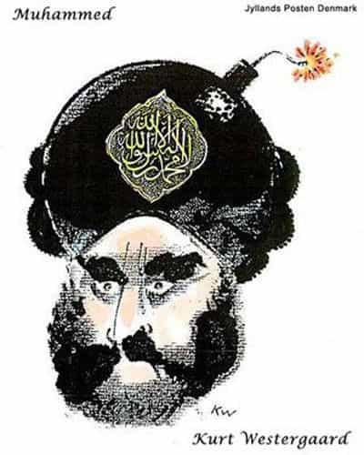

Adding a “-phobia” suffix to a group’s name creates a new word shielding them from criticism. Those are anti-concepts, empty terminology useful only to delegitimize real concepts. Pointing out a group’s flaws supposedly becomes wrongthink after labeling criticism a phobia, case closed, QED.
The first such usage is “xenophobia”, from the 19th century. (It’s natural to be wary of the unfamiliar, which could be taken to extremes. Still, unconditional acceptance doesn’t make sense either.) New phobia rhetoric is popping up like mushrooms lately, an ongoing trend.
The definition is critical

Oxygen thief John Wayne Gacy as Pogo the Clown
A phobia is an irrational fear of something. That’s a psychological condition. It’s basically a neurotic or at least illogical reaction.
Thus, arachnophobia is an irrational fear of spiders. Avoiding creepy crawly critters is natural, but it’s a phobia only if the reaction is excessive. Dreading clowns is coulrophobia. There are dozens of recognized phobias, but no central psychological authority approves new definitions. Anyone can call something a phobia. Gyrophobia is an irrational fear of Arab fajitas—I just made it up!
Note well that misusing “phobia” outside of its real meaning is a rhetorical trick. The psychobabble terminology is a framing tactic, labeling traditional beliefs as irrational. (Leftists once merely called their opponents mean and intolerant.) Criticism is not a phobia, nor is dislike, and having an opinion doesn’t make someone neurotic. Phobia rhetoric isn’t a real counterargument; it’s for deflecting criticism and obstructing debate.
If a cross-dressing man demands to be considered a woman, but you don’t buy into his peculiar beliefs, then you’re “transphobic”. If you think gay barebacking parties are health risks and immoral, you’re “homophobic”. If you say 400-pounders should exercise and control their eating lest they kill themselves, you’re “fatphobic”. This rhetoric implies that you’re the dysfunctional one. Nice, huh?
Medicalization of contrary political views is really nothing new. (That’s exactly what Theodor Adorno did when he wrote The Authoritarian Personality.) However, none of the new politicized terminology matches the real definition of phobia.
Homophobia

Ah, liberal parenting! Their little girl is the only one who realizes something ain’t right.
Gay activist George Weinberg made up this terminology in 1972, the oldest such word since xenophobia. He meant:
[T]he dread of being in close quarters with homosexuals—and in the case of homosexuals themselves, self-loathing.
Lately, the concept has been stretched considerably from that original definition. In particular, merely disagreeing with the gay agenda makes you a “homophobe”.
Are homos scary?
The swishy types couldn’t punch their way out of a wet paper bag. The gym rat types could, but aren’t known for above-average aggression. Homos even can be personable and charismatic, though they’re pretty tedious if their only hobby is being gay.
Homos aren’t threatening, unless you drop the soap in prison. Other than that, homophobes don’t actually fear homos. Some simply think two men banging is disgusting. Others don’t care what homos do in private—if it stays private—but don’t believe it should be encouraged, or that society must accommodate their every demand.
Fatphobia

No, start listening to your doctor instead. We don’t want people to suffer.
Translated, fatphobia means “I don’t want to exercise or push the fork out of my face”. Even so, nobody hates fat people. We hope that they get better, and we’ll help too. ROK has several articles about diet and physical fitness, and I also explain how to get in shape.
Are fatties scary?
Actually, in the 19th century, fat guys were considered jolly and prosperous. Fat chicks were considered quite attractive during the Renaissance. However, that just doesn’t fly these days. Being overweight isn’t a sign of prosperity; unhealthy artificial food is cheap now.
Anyway, it’s silly to argue that anyone’s afraid of fatties. If 400-pound junk food junkies try to mug someone to feed their addiction, they’re easily outrun.
Transphobia

Someone needs a hug.
Originally, trannies were men believing they’re women trapped in men’s bodies. It’s far weirder lately, especially following countless made-up genders. Some trannies even think they can switch between being male and female according to their mood.
That said, all their rhetoric fails the Occam’s Razor test. It’s impossible to prove the existence of female souls inhabiting male bodies. However, crazy people certainly exist, and this particular delusion should be considered no differently. If someone calls bullshit on this mental illness, the “transphobia” label implies it’s pathological to disbelieve in their aberrant version of reality.
Are trannies scary?
Bruce Jenner might outrun you, but he won’t outfight you. Although some trannies actually are violent criminals, the vast majority are merely tedious and annoying.
Islamophobia

If Muslims don’t like criticism, they should stop doing things that get them criticized.
During the Age of Enlightenment—when liberalism was still a good thing—the right to dissent from religious orthodoxy was one of the first major causes. Today, you can criticize any religion freely, except special ones. Dissenting from Islam is now a “phobia”.
Are Muslims scary?
Your nearby convenience store manager is probably an okay guy. However, when large numbers are involved, Muslims are lots of trouble. How many Methodist suicide bombings have there been, or Amish buggies running through crowds? It’s not exactly an irrational fear when lots of them really are out to get you.
Femmephobia

So frightening, oh my!
Strangely, this applies both to disliking sissy guys and feminine women. However, someone who considers a dude in a pink ballerina outfit to be a fruitcake won’t have any objection to feminine women. Why is this even a word?
Are femmes scary?
Get real.
Whorephobia

They just want to love you long time (for a price, of course).
This one’s for “sex workers” who don’t like criticism. So having the very common traditional belief that sex for money is immoral is now a “phobia”.
Are hookers scary?
I saw a few scary-looking ones in Barcelona, but most hookers are attractive. (Those who aren’t are in the wrong “career”.) Since I don’t pay for it, I don’t care.
Lesbophobia
The odd haircut is part of the uniform.
For some unfathomable reason, someone made up a special category apart from homophobia, as if lesbos get criticized worse than male homos. Most people don’t want to see two men banging, but would be delighted to see two women banging (so long as they’re actually cute).
Are lesbos scary?
No way! Actually, lesbos are awesome if they make exceptions. Otherwise, thanks for nothing!
Psychophobia
Oxygen thief Jared Laughner as The Joker
Psychophobia is also called “sanism”, another newly made-up anti-concept. This is proof that the leftist mania for the abnormal is—dare we say it—getting crazy. Sanity is normal and good, but the phobia rhetoric makes this obvious conclusion—you guessed it—supposedly pathological.
Are psychos scary?
If someone wearing a tinfoil hat warns you that Martians are invading Uranus, you’ll laugh it off. When psychos are both crazy and violent, then fears aren’t exactly unjustified.
Vegaphobia

Eat all the veggies you want. Cool by me!
This is the silliest “-phobia” word ever. Why did they even bother making it up? Maybe a vegan got butthurt after being laughed at for mainlining pureed cauliflower.
Are vegans scary?
Absolutely! Vegan gangs roam around at night, clubbing innocent citizens with celery. Don’t even get me started about the Broccoli Mafia.
Read More: 5 Demented “Phobias” That The Left Is Ready To Unleash